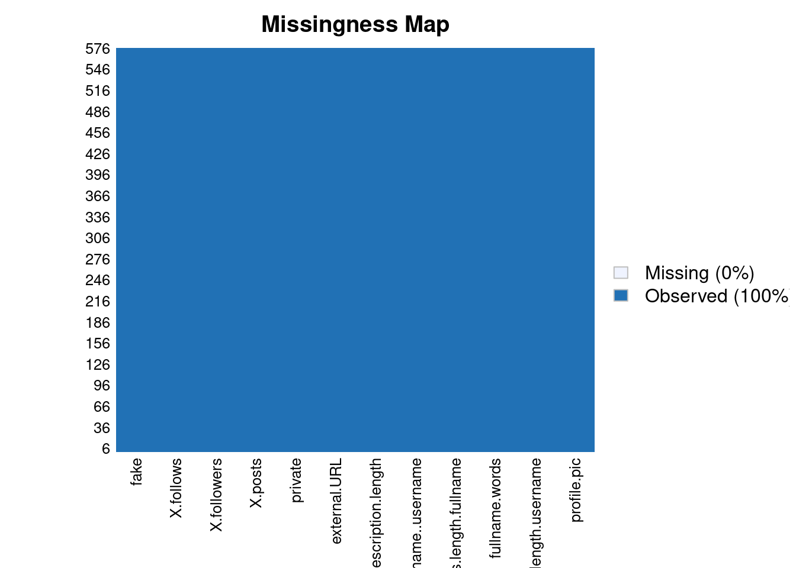

# Librerías
library(magrittr)
library(dplyr)
library(Amelia)Análisis exploratorio de datos
El análisis exploratorio de datos es un paso fundamental a la hora de trabajar con cualquier conjunto de datos, pues nos permite comprender el tipo de información que queremos extraer de ellos y nos da una visión general de las herramientas que nos serán convenientes utilizar en los pasos posteriores.
Para empezar, tenemos dos ficheros csv, que corresponden al training set y testing set, respectivamente. Para este paso comenzaremos a utilizar el primero, pues simplemente queremos observar de forma general su contenido.
Conociendo los datos
data <- read.csv("train.csv")
head(data) profile.pic nums.length.username fullname.words nums.length.fullname
1 1 0.27 0 0
2 1 0.00 2 0
3 1 0.10 2 0
4 1 0.00 1 0
5 1 0.00 2 0
6 1 0.00 4 0
name..username description.length external.URL private X.posts X.followers
1 0 53 0 0 32 1000
2 0 44 0 0 286 2740
3 0 0 0 1 13 159
4 0 82 0 0 679 414
5 0 0 0 1 6 151
6 0 81 1 0 344 669987
X.follows fake
1 955 0
2 533 0
3 98 0
4 651 0
5 126 0
6 150 0El dataset está compuesto por 12 columnas, detallando información como si la cuenta es privada, si tiene foto de perfil y si dicha cuenta es falsa.
# Tamaño del dataset
dim(data)[1] 576 12str(data)'data.frame': 576 obs. of 12 variables:
$ profile.pic : int 1 1 1 1 1 1 1 1 1 1 ...
$ nums.length.username: num 0.27 0 0.1 0 0 0 0 0 0 0 ...
$ fullname.words : int 0 2 2 1 2 4 2 2 0 2 ...
$ nums.length.fullname: num 0 0 0 0 0 0 0 0 0 0 ...
$ name..username : int 0 0 0 0 0 0 0 0 0 0 ...
$ description.length : int 53 44 0 82 0 81 50 0 71 40 ...
$ external.URL : int 0 0 0 0 0 1 0 0 0 1 ...
$ private : int 0 0 1 0 1 0 0 0 0 0 ...
$ X.posts : int 32 286 13 679 6 344 16 33 72 213 ...
$ X.followers : int 1000 2740 159 414 151 669987 122 1078 1824 12945 ...
$ X.follows : int 955 533 98 651 126 150 177 76 2713 813 ...
$ fake : int 0 0 0 0 0 0 0 0 0 0 ...Todos los datos son de algún tipo numérico, pero será interesante pasar algunas de estas columnas a factores (especialmente aquellas que toman una serie de valores fijos).
# Convertimos en factor
data$profile.pic <- data$profile.pic %>% as.factor()
data$external.URL <- data$external.URL %>% as.factor()
data$private <- data$private %>% as.factor()
data$fake <- data$fake %>% as.factor()Veamos un resumen estadístico de las variables.
summary(data) profile.pic nums.length.username fullname.words nums.length.fullname
0:172 Min. :0.0000 Min. : 0.00 Min. :0.00000
1:404 1st Qu.:0.0000 1st Qu.: 1.00 1st Qu.:0.00000
Median :0.0000 Median : 1.00 Median :0.00000
Mean :0.1638 Mean : 1.46 Mean :0.03609
3rd Qu.:0.3100 3rd Qu.: 2.00 3rd Qu.:0.00000
Max. :0.9200 Max. :12.00 Max. :1.00000
name..username description.length external.URL private X.posts
Min. :0.00000 Min. : 0.00 0:509 0:356 Min. : 0.0
1st Qu.:0.00000 1st Qu.: 0.00 1: 67 1:220 1st Qu.: 0.0
Median :0.00000 Median : 0.00 Median : 9.0
Mean :0.03472 Mean : 22.62 Mean : 107.5
3rd Qu.:0.00000 3rd Qu.: 34.00 3rd Qu.: 81.5
Max. :1.00000 Max. :150.00 Max. :7389.0
X.followers X.follows fake
Min. : 0 Min. : 0.0 0:288
1st Qu.: 39 1st Qu.: 57.5 1:288
Median : 150 Median : 229.5
Mean : 85307 Mean : 508.4
3rd Qu.: 716 3rd Qu.: 589.5
Max. :15338538 Max. :7500.0 También es importante saber si hay información faltante en el dataset, pues habría que decidir si eliminar esas filas o buscar alguna alternativa. Para ello, vamos a visualizar cuantas celdas hay a null.
# Función de libreria Amelia
missmap(data)
Por suerte, no tenemos que gestionar los valores nulos, pues no existe ninguno.
# Número de cuentas falsas
sum(data$fake==1)[1] 288¿Qué características tiene una cuenta falsa?
Intuitivamente, es razonable pensar que la mayoría de cuentas falsas serán aquellas con un número muy bajo de seguidores. Veamos si esto es cierto.
# Cuentas falsas con menos seguidores que la media
fake_followers <- data %>%
filter(data$fake==1 & data$X.followers<mean(data$X.followers))
dim(fake_followers)[1][1] 288Esto ya nos da algunas ideas interesantes, pues hemos comprobado que TODAS las cuentas falsas tienen un número de seguidores inferior a la media.
Otra característica propia de las cuentas falsas es que tengan poca o ninguna información, por lo que es probable que la mayoría no tengan foto de perfil o descripción.
# Cuentas falsas sin foto de perfil ó descripción
length(which(data$fake==1 & (data$profile.pic==0 | data$description.length==0)))[1] 255# Cantidad de cuentas que son falsas en función de si son públicas o privadas
data %>%
group_by(fake, private) %>%
summarise(cantidad=n())`summarise()` has grouped output by 'fake'. You can override using the
`.groups` argument.# A tibble: 4 × 3
# Groups: fake [2]
fake private cantidad
<fct> <fct> <int>
1 0 0 174
2 0 1 114
3 1 0 182
4 1 1 106Vemos que dentro de las cuentas que son privadas o no, hay una distribución uniforme de las cuentas falsas. Por tanto, esta columna es probable que no nos aporte mucha información en futuros modelos.
# Cantidad de cuentas que son falsas en función de si tienen foto de perfil o no
data %>%
group_by(fake, profile.pic) %>%
summarise(cantidad=n())`summarise()` has grouped output by 'fake'. You can override using the
`.groups` argument.# A tibble: 4 × 3
# Groups: fake [2]
fake profile.pic cantidad
<fct> <fct> <int>
1 0 0 2
2 0 1 286
3 1 0 170
4 1 1 118La gran mayoría de cuentas reales poseen foto de perfil.
# Cuentas falsas con URL
length(which(data$external.URL==1 & data$fake==1))[1] 0Algunas conclusiones que obtenemos es que todas las cuentas falsas tienen pocos seguidores, no tienen URL y tampoco suelen tener foto de perfil ni descripción. Esto nos ayudará a lo largo del proyecto a focalizar nuestra atención en los atributos que más información nos dan sobre cada cuenta.
Para profundizar más en todo esto, será interesante estudiar estos datos de forma visual, que es lo que se hará en el siguiente capítulo.